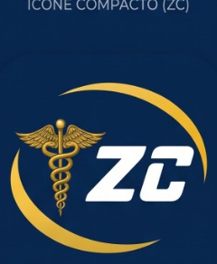

<!DOCTYPE html>
<html lang="pt-BR">
<head>
  <meta charset="UTF-8" />
  <meta name="viewport" content="width=device-width, initial-scale=1.0" />
  <title>ZGESTOR — Sistema de Gestão Contábil, Fiscal, DP, Parcelamentos, CNDs e Central do Cliente</title>
  <!-- Tailwind CSS -->
  <script src="https://cdn.tailwindcss.com"></script>
  <!-- Lucide Icons -->
  <script src="https://unpkg.com/lucide@latest"></script>
  <!-- Supabase Official JS SDK v2 -->
  <script src="https://cdn.jsdelivr.net/npm/@supabase/supabase-js@2"></script>
  <!-- Google Fonts Inter -->
  <link rel="preconnect" href="https://fonts.googleapis.com">
  <link rel="preconnect" href="https://fonts.gstatic.com" crossorigin>
  <link href="https://fonts.googleapis.com/css2?family=Inter:wght@400;500;600;700;800&display=swap" rel="stylesheet">
  <style>
    html, body {
      font-family: 'Inter', -apple-system, BlinkMacSystemFont, sans-serif;
      max-width: 100vw;
      overflow-x: hidden;
    }
    /* Garante que todas as tabelas se ajustem à largura da tela sem gerar barra de rolagem horizontal */
    table {
      width: 100%;
      border-collapse: collapse;
    }
    th, td {
      word-break: break-word;
      overflow-wrap: anywhere;
    }
  </style>
</head>
<body class="bg-slate-100 text-slate-900 min-h-screen w-full overflow-x-hidden">

  <!-- TELA DE LOGIN / AUTENTICAÇÃO (Exibida quando não há sessão ativa) -->
  <div id="app-auth-screen" class="hidden min-h-screen w-full flex items-center justify-center bg-slate-950 p-4"></div>

  <!-- APLICAÇÃO AUTENTICADA -->
  <div id="app-authenticated" class="flex flex-col lg:flex-row w-full min-h-screen">
    <!-- Sidebar Lateral Compacta -->
  <aside id="main-sidebar" class="w-full lg:w-56 xl:w-60 bg-slate-900 text-white flex flex-col justify-between shrink-0 lg:min-h-screen transition-all duration-200">
    <div>
      <!-- Logo Oficial do Escritório Zioto Contabilidade -->
      <div class="p-3.5 border-b border-slate-800 flex items-center justify-between bg-slate-950/40">
        <div class="flex items-center gap-2.5 min-w-0" id="sidebar-brand-block">
          <div class="w-10 h-10 rounded-xl bg-[#012147] border border-slate-700/60 p-1 flex items-center justify-center shrink-0 shadow-md">
            
            <span style="display:none;" class="font-extrabold text-amber-400 text-xs">ZC</span>
          </div>
          <div class="min-w-0 sidebar-brand-text">
            <div class="font-black tracking-tight text-sm text-white truncate leading-tight">ZIOTO</div>
            <div class="text-[9px] text-amber-400 font-bold uppercase tracking-widest leading-tight">CONTABILIDADE</div>
          </div>
        </div>
        <!-- Botão discreto para recolher/expandir o menu -->
        <button
          id="sidebar-toggle-btn"
          onclick="window.ZGestorApp.toggleSidebar()"
          type="button"
          class="hidden lg:flex p-1.5 rounded-lg text-slate-400 hover:text-white hover:bg-slate-800 transition cursor-pointer"
          title="Recolher menu lateral">
          <i data-lucide="chevrons-left" id="sidebar-toggle-icon" class="w-4 h-4"></i>
        </button>
      </div>

      <!-- Menu de Navegação em 4 Blocos -->
      <div class="p-2.5">
        <nav id="sidebar-nav" class="space-y-2.5"></nav>
      </div>
    </div>

    <!-- Rodapé Técnico da Sidebar (Visível SOMENTE para Administrador) -->
    <div id="sidebar-technical-footer" class="p-3.5 border-t border-slate-800 text-xs text-slate-400 space-y-2">
      <div class="flex items-center justify-between sidebar-footer-text">
        <span>Políticas RLS:</span>
        <span class="text-emerald-400 font-semibold">Ativas</span>
      </div>
      <button
        onclick="window.zgestorDB.resetToSeedData(); window.ZGestorApp.renderAll(); window.ZGestorApp.showToast('Base de demonstração restaurada!', 'info');"
        class="w-full py-1.5 px-2.5 rounded-lg bg-slate-800 hover:bg-slate-700 text-slate-300 text-[11px] font-medium transition flex items-center justify-center gap-1.5 cursor-pointer">
        <i data-lucide="rotate-ccw" class="w-3.5 h-3.5 text-amber-400 shrink-0"></i>
        <span class="sidebar-footer-text">Restaurar Dados de Exemplo</span>
      </button>
    </div>
  </aside>

  <!-- Área Principal em Tela Cheia (100% da Largura Disponível, Sem Rolagem Lateral) -->
  <div class="flex-1 flex flex-col min-w-0 w-full max-w-full overflow-x-hidden">
    <!-- Banner de Modo Simulação (Exibido exclusivamente quando testando o Portal do Cliente) -->
    <div id="simulacao-portal-banner"></div>

    <!-- Barra Superior -->
    <header id="top-header" class="bg-white border-b border-slate-200 px-4 py-3 sticky top-0 z-30 shadow-xs w-full"></header>

    <!-- Conteúdo Dinâmico da Aba Selecionada (Full Width) -->
    <main id="main-view" class="flex-1 p-3 sm:p-4 lg:p-5 w-full max-w-none overflow-x-hidden"></main>
  </div>

  </div><!-- /#app-authenticated -->

  <!-- Container de Modais e Notificações -->
  <div id="modal-root"></div>
  <div id="toast-container" class="fixed bottom-5 right-5 z-50 flex flex-col gap-2"></div>

  <!-- Scripts da Aplicação -->
  <script src="./src/data/seedData.js"></script>
  <script src="./src/lib/dbEngine.js"></script>
  <script src="./src/ui/views.js"></script>
  <script src="./src/ui/reports.js"></script>
  <script src="./src/app.js"></script>
</body>
</html>
